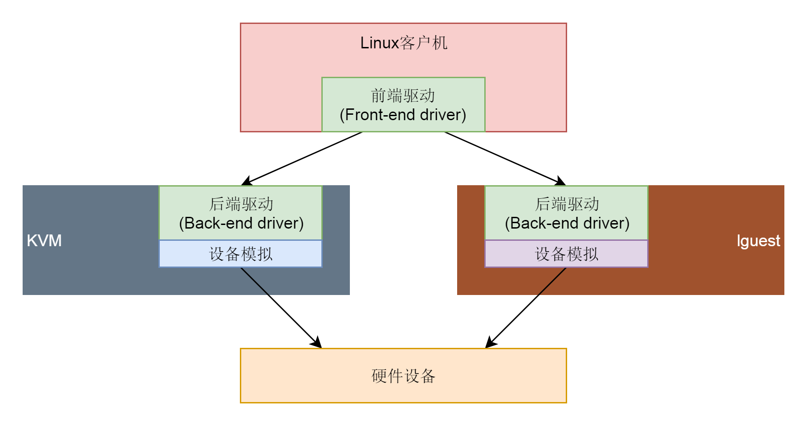

位图
位图
- 要求数字的范围不是很大
布隆过滤器
- 我们使用 K 个哈希函数，对同一个数字进行求哈希值，那会得到 K 个不同的哈希值
- 将对应的BitMap设置为true，用K个二进制位来表示一个数字的存在
布隆过滤器和三列表对比
- 布隆过滤器用多个哈希函数对同一个网页链接进行处理，CPU 只需要将网页链接从内存中读取一次，进行多次哈希计算，理论上讲这组操作是 CPU 密集型的。而在散列表的处理方式中，需要读取散列冲突拉链的多个网页链接，分别跟待判重的网页链接，进行字符串匹配。这个操作涉及很多内存数据的读取，所以是内存密集型的。我们知道 CPU 计算可能是要比内存访问更快速的，所以，理论上讲，布隆过滤器的判重方式，更加快速
扩容
- 布隆过滤器的误判率，主要跟哈希函数的个数、位图的大小有关。当我们往布隆过滤器中不停地加入数据之后，位图中不是 true 的位置就越来越少了，误判率就越来越高了
- 当布隆过滤器中，数据个数与位图大小的比例超过某个阈值的时候，我们就重新申请一个新的位图
拓展
- Java BitSet
- Guava工具包
存储虚拟化
virtio
- virtio 负责对于虚拟机提供统一的接口
- 
架构四层
- 虚拟机里面的 virtio 前端，针对不同类型的设备有不同的驱动程序，但是接口都是统一的
- 在宿主机的 qemu 里面，实现 virtio 后端的逻辑，主要就是操作硬件的设备
- virtio 的前端和后端之间，有一个通信层，里面包含virtio 层和virtio-ring 层
总结
- 前端有前端的块设备驱动 Front-end driver，在客户机的内核里面，它符合普通设备驱动的格式，对外通过 VFS 暴露文件系统接口给客户机里面的应用。这一部分这一节我们没有讲，放在下一节解析。
- 后端有后端的设备驱动 Back-end driver，在宿主机的 qemu 进程中，当收到客户机的写入请求的时候，调用文件系统的 write 函数，写入宿主机的 VFS 文件系统，最终写到物理硬盘设备上的 qcow2 文件。
- 中间的队列用于前端和后端之间传输数据，在前端的设备驱动和后端的设备驱动，都有类似的数据结构 virt-queue 来管理这些队列

前端设备驱动virtio_blk
- virtqueue 是一个介于客户机前端和 qemu 后端的一个结构，用于在这两端之间传递数据
struct vring_virtqueue {
struct virtqueue vq;
/* Actual memory layout for this queue */
struct vring vring;
......
}
- struct virtio_device 里面有一个 struct vring_virtqueue，在 struct vring_virtqueue 里面有一个 struct vring

总结

kafka工具
生产者和消费者性能测试
- kafka-producer-perf-test.sh --topic test1 --num-records 10000000 --throughput -1 --record-size 1024 --producer-props bootstrap.servers=master:9092 acks=-1 linger.ms=2000 compression.type=lz4
- kafka-consumer-perf-test.sh --broker-list master:9092 --messages 10000000 --topic test1
查看消息主题的总数
- kafka-run-class.sh kafka.tools.GetOffsetShell --broker-list master:9092 --time -2 --topic test1
- kafka-run-class.sh kafka.tools.GetOffsetShell --broker-list master:9092 --time -1 --topic test1
消息文件数据
Mysql主备一致
delete导致主备不一致
- 在主库执行这条 SQL 语句的时候，用的是索引 a；而在备库执行这条 SQL 语句的时候，却使用了索引 t_modified。主从选择的索引不一样
- 线上binlog格式设置为mixed
row格式好处
- 恢复数据比较快
- Flashback工具
- binlog的日志解析出来不能直接拷贝执行
- 记录操作的记录的主键真实的值
循环复制问题
- log_slave_updates=on可以让备库执行relay log后生成binlog
线上生产库非双一
- 业务高峰期。一般如果有预知的高峰期，DBA 会有预案，把主库设置成“非双 1”。
- 备库延迟，为了让备库尽快赶上主库。
- 用备份恢复主库的副本，应用 binlog 的过程，这个跟上一种场景类似。
- 批量导入数据的时候。
重设消费者位移
消息引擎
- 它是基于日志结构（log-based）的消息引擎，消费者在消费消息时，仅仅是从磁盘文件上读取数据而已，是只读的操作，因此消费者不会删除消息数据。同时，由于位移数据是由消费者控制的，因此它能够很容易地修改位移的值，实现重复消费历史数据的功能。
重设位移策略
- 位移维度
- 时间维度
各种策略

拓扑排序
本质
- 是基于有向无环图的一个算法
内存管理
接口
- brk
- mmap
- munmap
内存碎片原因
- brk分配的地址需要等到高地址内存释放以后才能释放，mmap分配的内存可以单独释放
libc是如何管理内存
- ptmalloc
- fast bins
- unsorted bins
- 大内存 large bins->mmaped chunk->main area->top chunk
ptmalloc分配
- 获取分配区的锁，防止多线程冲突。
- 计算出需要分配的内存的chunk实际大小。
- 判断chunk的大小，如果小于max_fast（64b），则取fast bins上去查询是否有适合的chunk，如果有则分配结束。
- chunk大小是否小于512B，如果是，则从small bins上去查找chunk，如果有合适的，则分配结束。
- 继续从 unsorted bins上查找。如果unsorted bins上只有一个chunk并且大于待分配的chunk，则进行切割，并且剩余的chunk继续扔回unsorted bins；如果unsorted bins上有大小和待分配chunk相等的，则返回，并从unsorted bins删除；如果unsorted bins中的某一chunk大小 属于small bins的范围，则放入small bins的头部；如果unsorted bins中的某一chunk大小 属于large bins的范围，则找到合适的位置放入。
- 从large bins中查找，找到链表头后，反向遍历此链表，直到找到第一个大小 大于待分配的chunk，然后进行切割，如果有余下的，则放入unsorted bin中去，分配则结束。
- 如果搜索fast bins和bins都没有找到合适的chunk，那么就需要操作top chunk来进行分配了（top chunk相当于分配区的剩余内存空间）。判断top chunk大小是否满足所需chunk的大小，如果是，则从top chunk中分出一块来。
- 如果top chunk也不能满足需求，则需要扩大top chunk。主分区上，如果分配的内存小于分配阀值（默认128k），则直接使用brk()分配一块内存；如果分配的内存大于分配阀值，则需要mmap来分配；非主分区上，则直接使用mmap来分配一块内存。通过mmap分配的内存，就会放入mmap chunk上，mmap chunk上的内存会直接回收给操作系统。
ptmalloc释放
- 获取分配区的锁，保证线程安全。
- 如果free的是空指针，则返回，什么都不做。
- 判断当前chunk是否是mmap映射区域映射的内存，如果是，则直接munmap()释放这块内存。前面的已使用chunk的数据结构中，我们可以看到有M来标识是否是mmap映射的内存。
- 判断chunk是否与top chunk相邻，如果相邻，则直接和top chunk合并（和top chunk相邻相当于和分配区中的空闲内存块相邻）。转到步骤8
- 如果chunk的大小大于max_fast（64b），则放入unsorted bin，并且检查是否有合并，有合并情况并且和top chunk相邻，则转到步骤8；没有合并情况则free。
- 如果chunk的大小小于 max_fast（64b），则直接放入fast bin，fast bin并没有改变chunk的状态。没有合并情况，则free；有合并情况，转到步骤7
- 在fast bin，如果当前chunk的下一个chunk也是空闲的，则将这两个chunk合并，放入unsorted bin上面。合并后的大小如果大于64KB，会触发进行fast bins的合并操作，fast bins中的chunk将被遍历，并与相邻的空闲chunk进行合并，合并后的chunk会被放到unsorted bin中，fast bin会变为空。合并后的chunk和topchunk相邻，则会合并到topchunk中。转到步骤8
- 判断top chunk的大小是否大于mmap收缩阈值（默认为128KB），如果是的话，对于主分配区，则会试图归还top chunk中的一部分给操作系统。free结束。
内存池
- 单线程内存池
- 多线程内存池
- 固定内存池和可变内存池
- boost::pool
C程序内存管理和main函数前生今世
智能指针
- auto_ptr
- unique_ptr